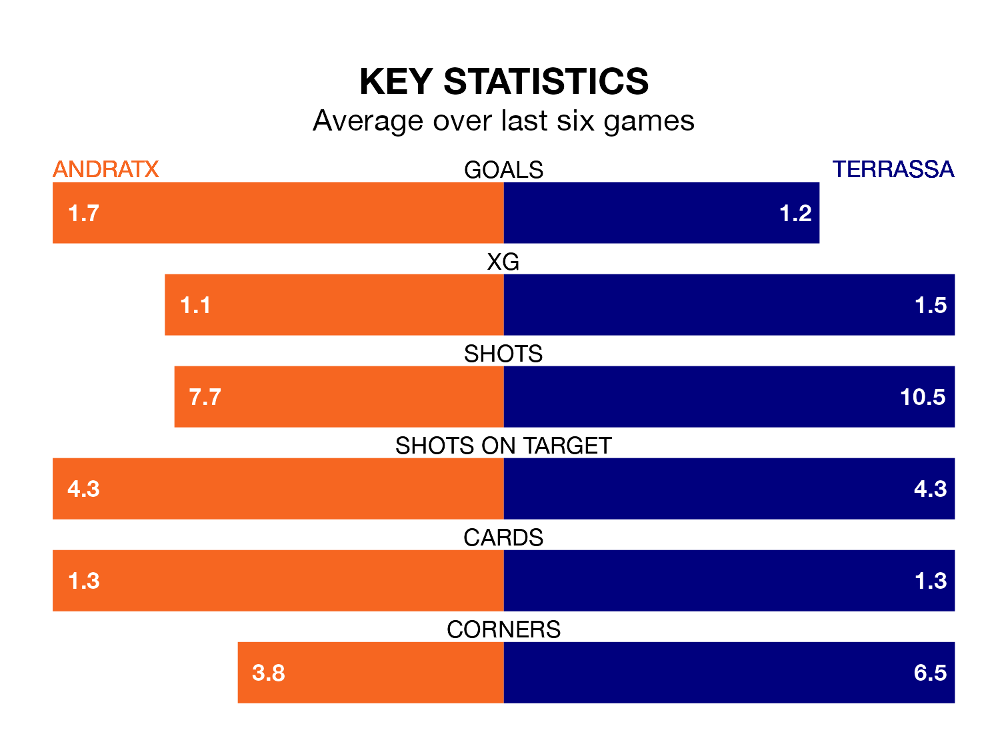

Terrassa travel to Andratx on early Sunday in the Segunda División RFEF Group 3.
The visitors come into the game on the back of a defeat in their last match, having lost to UE Sant Andreu 1-0 at home.
Andratx, meanwhile, won their last match, 3-2 against La Nucía, with their goals scored by Javier Castedo Castillejo, Miquel Alorda Sampol and Gabriel Ramis Aguilo.
With 26 goals in 23 games so far this season, Terrassa are scoring at below the league average rate with 1.1 goals per game. And they are conceding more than average, letting in 30 goals at a rate of 1.3 per game.
Andratx, meanwhile, are above average scorers, with 1.3 goals per game, compared to a league average of 1.2. They have conceded 1.4 goals per game.
The away side are 13th in the table after 23 games, of which they have won six and drawn nine, earning 27 points.
The hosts are four places ahead of Terrassa in ninth, with eight wins and seven draws putting them on 31 points.
In the last three years, Andratx and Terrassa have played each other on three occasions. They won one each, and they drew once.
Their last meeting was on October 15, when Terrassa won 1-0 at home.
Andratx are in mixed form in the Segunda División RFEF Group 3, with two wins and two draws from their last six games.
And also with two wins and two draws over that period, Terrassa's form is identical – they have both taken eight points from 18.
Updated: 10:08 (UTC), 23/02/24